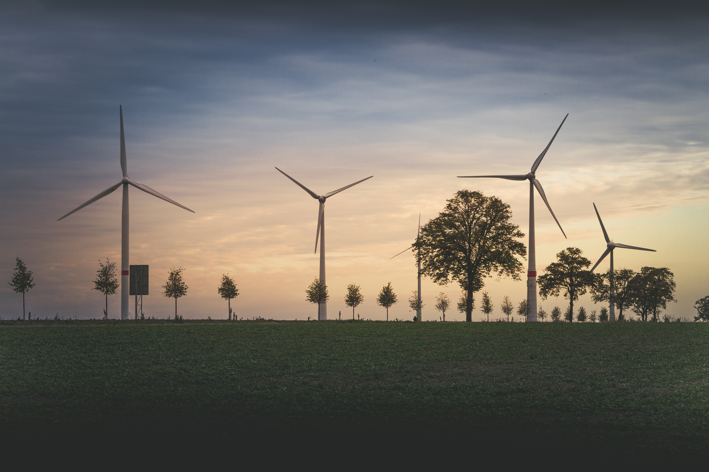
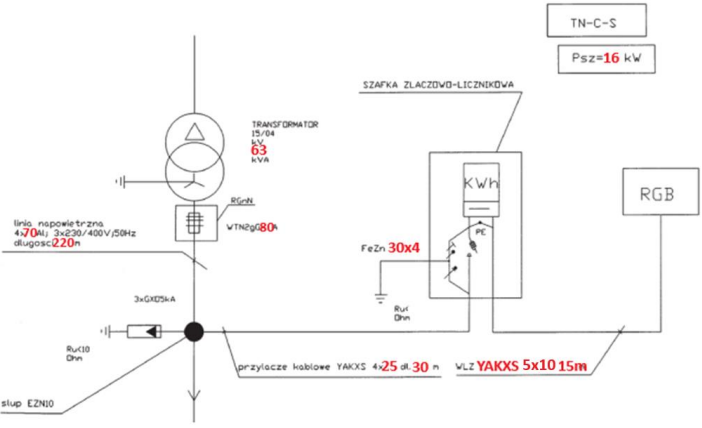
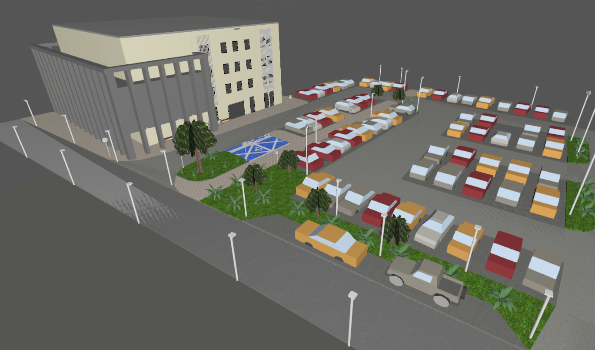
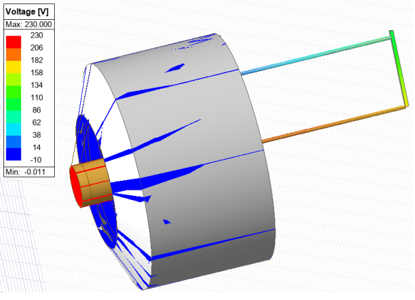
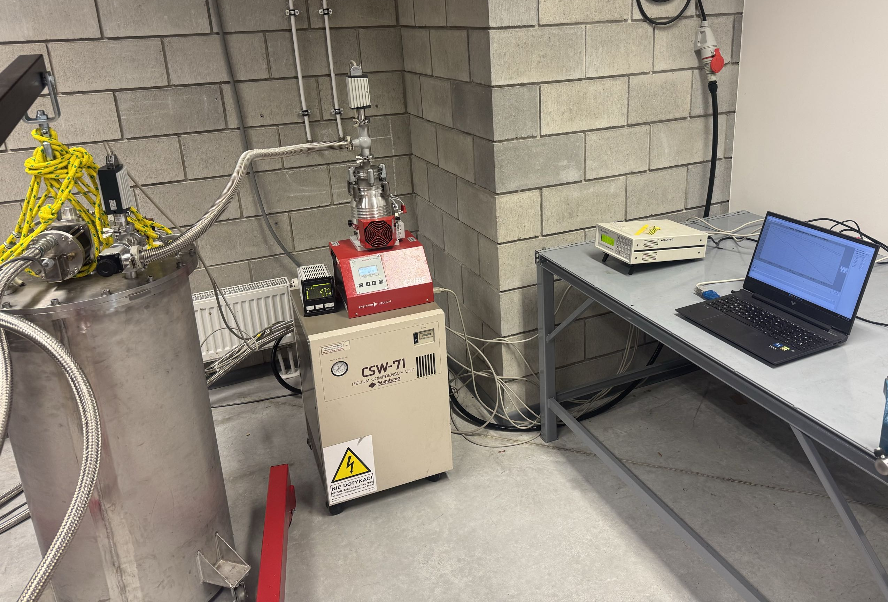
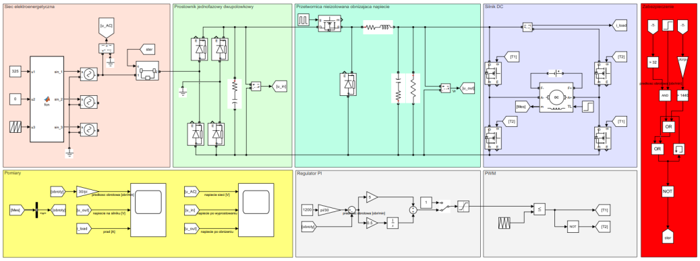
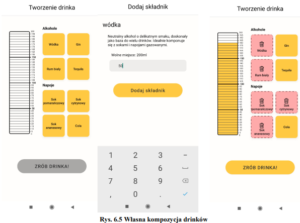
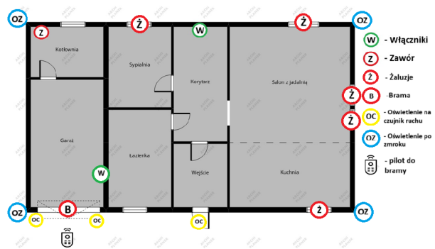
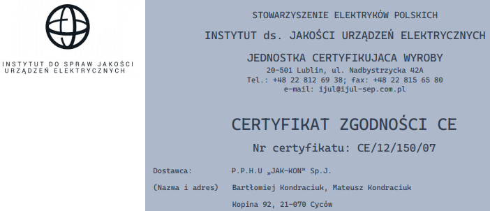
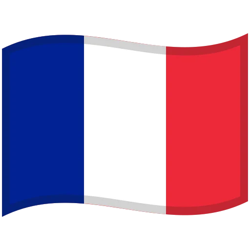

Inżynier
elektrotechniki
Projektowanie, analiza i rozwój nowoczesnych systemów elektroenergetycznych.
Portfolio / About Me
O mnie
Wstęp
Jestem absolwentem kierunku Inżynierskie zastosowania informatyki w elektrotechnice na Politechnice Lubelskiej. Posiadam wiedzę z zakresu elektrotechniki, elektroenergetyki oraz projektowania i eksploatacji infrastruktury elektrycznej. Mam doświadczenie w pracy z dokumentacją techniczną, schematami ideowymi i montażowymi oraz realizacji prac związanych z konserwacją i diagnostyką urządzeń elektroenergetycznych.
Posiadam uprawnienia SEP do 1 kV oraz doświadczenie przy montażu instalacji elektrycznych i teletechnicznych. Aktywnie uczestniczyłem w projektach koła naukowego, prezentacji wyników pracy na sympozjach naukowych oraz brałem udział w warsztatach, m.in. z zakresu elektroniki organizowanych przez Politechnikę Łódzką.
Edukacja
02.2025 - 06.2026
Politechnika Lubelska
Magister inżynier - "Inżynierskie zastosowania informatyki w elektrotechnice"
10.2021 - 02.2025
Politechnika Lubelska
Inżynier - "Inżynierskie zastosowania informatyki w elektrotechnice"
09.2016 - 06.2021
Zespół Szkół im. Króla Kazimierza Jagiellończyka w Łęcznej
Technik informatyk - kwalifikacje EE.08 i EE.09
Doświadczenie
07.2024 - 10.2024
Młodszy specjalista ds. elektroenergetyki
SG ENERGY, Lublin
Wykonywałem konserwację, modernizację oraz
diagnostykę stacji SN/nN i infrastruktury
elektroenergetycznej zgodnie z dokumentacją
techniczną oraz obowiązującymi normami.
Pracowałem na podstawie schematów ideowych
i montażowych. Przeprowadzałem przeglądy urządzeń
elektroenergetycznych, analizowałem ich stan
techniczny oraz sporządzałem dokumentację
powykonawczą.
07.2023 - 12.2023
Monter instalacji elektrycznych i teletechnicznych
Elpie, Lublin
Analizowałem dokumentację techniczną, w tym
schematy, rysunki oraz opisy techniczne w celu
planowania tras kablowych i rozmieszczenia
urządzeń.
Wykonywałem montaż instalacji elektrycznych
i teletechnicznych obejmujący prowadzenie
przewodów, montaż osprzętu elektrycznego,
okablowanie systemów CCTV oraz instalacji
kontroli dostępu.
06.2019 - 03.2020
Programista aplikacji internetowych
Gloo, Łęczna
Tworzyłem aplikacje webowe zgodnie z dokumentacją
projektową. Zajmowałem się optymalizacją wydajności
aplikacji oraz pracą z systemem kontroli wersji Git.
Realizowałem projekty związane między innymi
z aplikacjami do obsługi zamówień.
Portfolio / Projects
Projekty

Projekt instalacji elektrycznej budynku jednorodzinnego wraz z przyłączem kablowym
Projekt obejmuje kompleksowe opracowanie instalacji elektrycznej dla budynku jednorodzinnego wraz z wykonaniem przyłącza kablowego nN. Dokumentacja zawiera analizę zapotrzebowania mocy, dobór kabli, przewodów i zabezpieczeń, obliczenia zwarciowe, sprawdzenie spadków napięcia oraz weryfikację selektywności zabezpieczeń zgodnie z obowiązującymi normami. W projekcie uwzględniono zasilanie wszystkich obwodów budynku, rozdzielnicę główną, ochronę przeciwporażeniową i przeciwprzepięciową oraz zestawienie materiałów.

Projekt oświetlenia kampusu Politechniki Lubelskiej
Projekt kompleksowego oświetlenia terenu kampusu Politechniki Lubelskiej wykonany w programie DIALux. Opracowanie obejmuje analizę rozmieszczenia opraw oświetleniowych, dobór urządzeń oraz symulację parametrów świetlnych dla przestrzeni zewnętrznych. Dokumentacja zawiera zestawienie zastosowanych opraw, karty katalogowe producentów, układ rozmieszczenia punktów świetlnych oraz wyniki obliczeń fotometrycznych.

Modelowanie i symulacja komputerowa klasycznej żarówki wolframowej w środowisku Ansys
Projekt przedstawia proces tworzenia modelu klasycznej żarówki wolframowej oraz przeprowadzenie symulacji komputerowej w programie Ansys. Model 3D został wykonany w programie Inventor z uwzględnieniem najważniejszych elementów konstrukcyjnych, takich jak styki elektryczne, izolacja ceramiczna, elektroda, drut wolframowy oraz szklana bańka. Następnie przygotowany model został poddany analizie elektrycznej w celu sprawdzenia rozkładu napięcia, strat rezystancyjnych, gęstości energii oraz temperatury elementów przewodzących.

Analiza strat mocy w układach kriogenicznych chłodzonych kontaktowo (praca magisterska)
Praca dotyczy analizy strat mocy w kontaktowo chłodzonych układach kriogenicznych. W ramach pracy dokonano przeglądu zagadnień związanych z kriogeniką, termodynamiką, wymianą ciepła oraz konstrukcją układów kriogenicznych. Przeprowadzono również badania wpływu zastosowania ekranów miedzianych oraz izolacji wielowarstwowej MLI na ograniczenie strat cieplnych w głowicy kriochłodziarki. Wyniki wykazały znaczącą poprawę efektywności energetycznej układu poprzez redukcję strat wynikających z przewodnictwa i promieniowania cieplnego.

Projekt układu energoelektronicznego zasilania silnika DC z regulacją napięcia i zabezpieczeniami w MATLAB / Simulink
Projekt przedstawia zaprojektowany w środowisku MATLAB / Simulink układ energoelektroniczny składający się z sieci zasilającej, prostownika jednofazowego, przetwornicy obniżającej napięcie typu Buck oraz układu sterowania silnikiem DC z mostkiem H. System utrzymuje napięcie wyjściowe na poziomie 210 V oraz stabilizuje prędkość silnika na poziomie 1200 obr/min przy zmiennym obciążeniu. Zastosowane zabezpieczenia chronią układ przed nadmiernym prądem (32 A) oraz przekroczeniem dopuszczalnej prędkości obrotowej.

Automatyczny barman do drinków sterowany aplikacją mobilną (praca inżynierska)
Projekt przedstawia prototyp automatycznego barmana umożliwiającego przygotowywanie drinków za pomocą aplikacji mobilnej. Urządzenie wykorzystuje mikrokontroler Arduino Mega 2560, osiem pompek dozujących oraz komunikację Bluetooth do automatycznego przygotowania wybranego napoju. Aplikacja mobilna pozwala użytkownikowi wybierać gotowe przepisy, tworzyć własne kompozycje oraz sterować procesem przygotowywania drinka. Projekt łączy zagadnienia elektroniki, automatyki, programowania mikrokontrolerów i tworzenia aplikacji mobilnych.

Projekt instalacji inteligentnego domu z wykorzystaniem systemu KNX – sterowanie ogrzewaniem, oświetleniem i automatyką budynkową
Projekt przedstawia instalację inteligentnego domu opartą na systemie KNX. Obejmuje sterowanie zaworem przełączającym źródło ciepłej wody, automatyzację oświetlenia, żaluzji oraz wykorzystanie czujników ruchu i zmierzchu. Celem projektu jest zwiększenie komfortu użytkowników oraz poprawa efektywności energetycznej budynku.

Certyfikat zgodności CE dla rozdzielnic elektrycznych niskiego napięcia
Projekt polegał na opracowaniu własnego certyfikatu zgodności CE dla urządzeń elektrycznych na wzór dokumentacji stosowanej w branży elektroenergetycznej. Dokument został przygotowany dla rozdzielnic elektrycznych niskiego napięcia, uwzględniając najważniejsze elementy formalne, takie jak dane producenta i dostawcy, oznaczenie wyrobu, parametry techniczne, odniesienie do norm zharmonizowanych oraz informacje dotyczące zgodności z wymaganiami Unii Europejskiej.
Portfolio / Skills
Umiejętności
Języki
Polski
Ojczysty
Angielski
B2/C1
Niemiecki
A2

Francuski
A2
Uprawnienia
SEP
do 1 kV
Prawo jazdy
Kat. B
Certyfikaty
AutoCAD - poziom podstawowy
Elpro
AutoCAD - poziom rozszerzony
Elpro
MATLAB Onramp
MathWorks
Machine Learning Onramp
MathWorks
Deep Learning Onramp
MathWorks